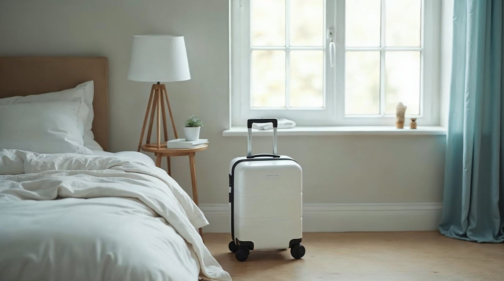
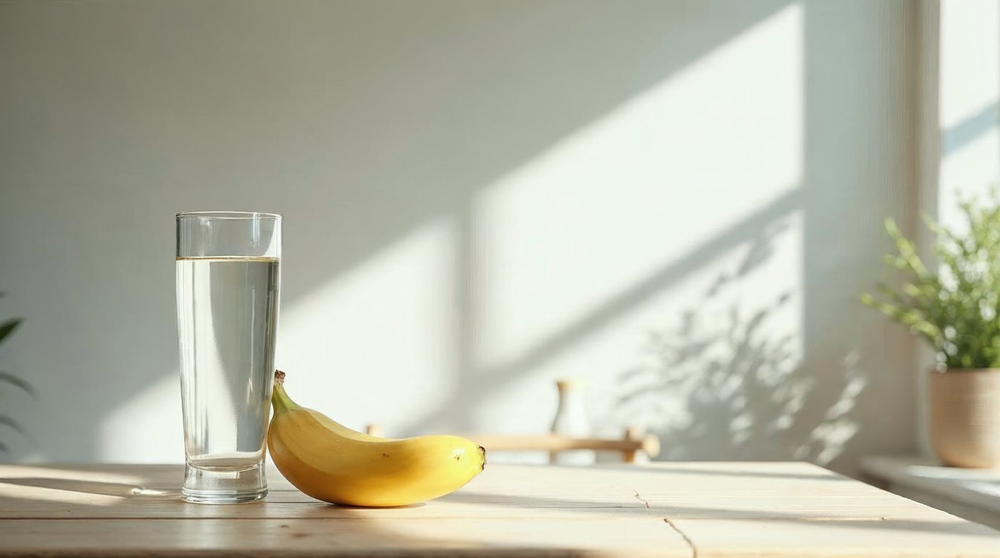
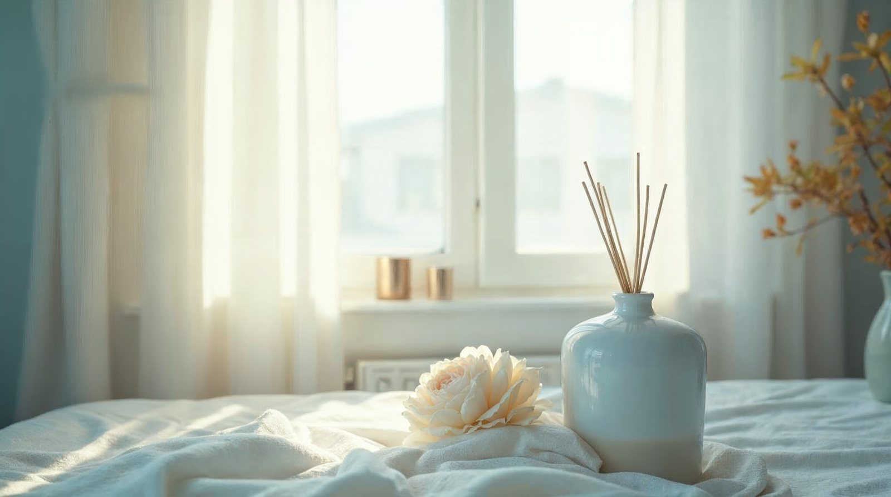
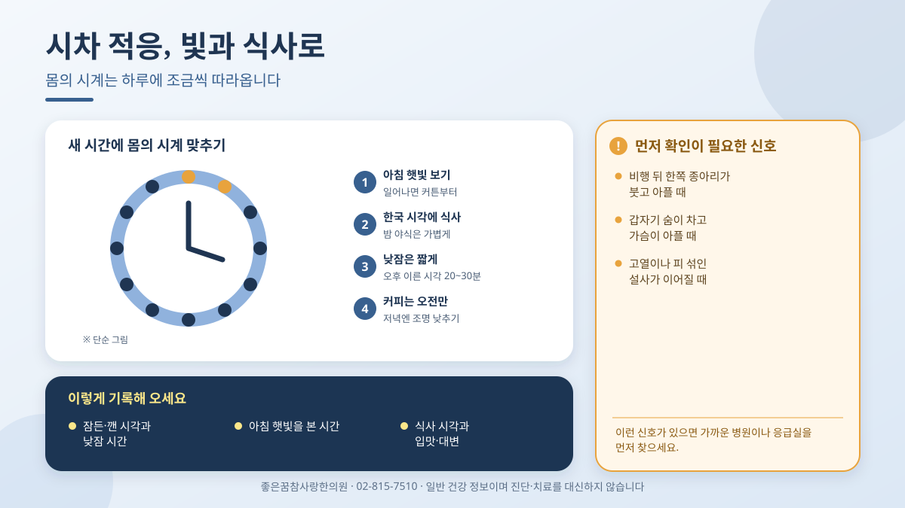

이종호 한의사 감수좋은꿈참사랑한의원 대표원장 (한의사 면허번호 19769)발행 2026-11-26 · 수정 2026-11-26
이 글의 차례
새벽 세 시, 집 안은 조용한데 눈이 말똥말똥합니다. 어제 저녁에 출장에서 돌아와 피곤해서 일찍 누웠는데, 몇 시간 자고 나니 잠이 달아났습니다. 휴대폰을 들여다보다 겨우 다시 잠들면 알람이 울립니다. 회사에서는 오후 두세 시만 되면 눈꺼풀이 무겁고 회의 내용이 머리에 들어오지 않습니다.
해외 출장이나 여행에서 돌아온 분들이 진료실에서 자주 하시는 말씀이 있습니다. "젊을 때는 하루 이틀이면 괜찮았는데, 요즘은 일주일이 가요." 잠뿐 아니라 입맛이 없고 속이 더부룩하고, 변비가 생기고, 머리가 멍하다고 하십니다.
시차 피로는 몸 안의 시계와 바깥의 시계가 어긋나서 생깁니다. 우리 몸은 하루를 주기로 잠, 체온, 소화, 호르몬을 조절하는데, 비행기는 이 시계가 따라올 틈도 없이 우리를 다른 시간대로 옮겨 놓습니다. 몸의 시계가 새 시간에 맞춰지기까지는 시간이 걸립니다.
다행히 시차 적응은 몇 가지 원리를 알고 움직이면 한결 수월해집니다. 오늘 글에서는 시차 피로가 왜 생기는지, 동쪽과 서쪽 방향에 따라 무엇이 다른지, 그리고 출발 전부터 돌아온 뒤까지 몸의 시계를 맞추는 방법을 정리해 보겠습니다.

시차 피로는 어떤 모습으로 오나요
시차 피로는 잠의 문제로만 생각하기 쉽지만, 실제로는 몸 전체에서 나타납니다. 진료실에서 자주 듣는 모습은 이렇습니다.
- 밤에 잠들기 어렵거나, 잠들었다가 새벽에 일찍 깬다
- 낮에 졸음이 쏟아지고 머리가 멍하며 집중이 잘 안 된다
- 입맛이 없거나 엉뚱한 시각에 배가 고프다
- 속이 더부룩하고 변비나 묽은 변이 생긴다
- 몸이 무겁고 다리가 붓는다
- 짜증이 늘고 기분이 가라앉는다
이런 불편은 대개 며칠에서 일주일 사이에 조금씩 잦아듭니다. 시차가 클수록, 나이가 들수록, 출장이 잦을수록 적응에 걸리는 시간이 길어지는 경향이 있습니다.
왜 몸의 시계는 바로 맞춰지지 않을까요
우리 뇌에는 하루의 리듬을 조절하는 시계가 있습니다. 이 시계는 주로 빛을 보고 시간을 맞춥니다. 아침 햇빛을 보면 하루가 시작되었다고 알고, 어두워지면 잠을 준비하는 신호를 보냅니다. 체온, 소화, 호르몬도 이 시계를 따라 움직입니다.
문제는 이 시계가 하루에 조금씩만 움직일 수 있다는 점입니다. 몇 시간의 시차를 한 번에 따라잡지 못하고 하루에 한 시간 남짓씩 천천히 맞춰 갑니다. 그래서 시차가 클수록 적응에 여러 날이 걸립니다.
몸 안의 여러 시계가 따로 맞춰지는 것도 불편을 키웁니다. 잠의 시계는 빛을 따라 비교적 빨리 움직이지만, 장의 시계는 식사 시각을 따라 움직입니다. 그래서 잠은 조금 돌아왔는데 소화는 아직 엉뚱한 시각에 움직이는 어긋남이 한동안 이어지기도 합니다.
한의학에서는 이런 시기를 낮과 밤의 흐름이 어긋나 기운이 제자리를 찾지 못한 상태로 설명하기도 합니다. 진단명이 아니라 진찰할 때 쓰는 전통적인 표현입니다. 피로로 기운이 처진 분, 열이 오르고 잠이 얕은 분처럼 사람마다 흔들리는 모습이 다릅니다.
동쪽과 서쪽, 방향에 따라 무엇이 다를까요
일반적으로 동쪽으로 갈 때가 서쪽으로 갈 때보다 적응이 더 어렵다고 알려져 있습니다. 동쪽으로 가면 하루가 짧아져 평소보다 일찍 자고 일찍 일어나야 하는데, 몸의 시계는 앞당기는 것보다 늦추는 것을 더 쉽게 받아들이기 때문입니다.
한국에서 미주로 갔다가 돌아오는 경우를 생각해 보면, 돌아올 때는 서쪽으로 오는 셈이라 밤이 길어집니다. 이때는 초저녁에 졸음이 쏟아지고 새벽에 일찍 깨기 쉽습니다. 유럽에서 돌아올 때는 동쪽으로 오는 셈이라 밤에 잠이 잘 오지 않고 아침에 일어나기 힘듭니다.
방향에 따라 빛을 보는 시간도 달라집니다. 새벽에 일찍 깨는 쪽이라면 저녁 무렵의 빛을, 밤에 잠이 안 오는 쪽이라면 아침 빛을 충분히 보는 것이 몸의 시계를 옮기는 데 도움이 됩니다.
식사로 장의 시계 맞추기
장의 시계는 식사 시각을 따라 움직입니다. 그래서 돌아온 날부터 한국 시각에 맞춰 세끼를 드시는 것이 장을 새 시간에 맞추는 가장 쉬운 방법입니다. 입맛이 없더라도 아침에는 가볍게라도 무언가를 드시길 권합니다.
밤중에 배가 고파 깨는 일이 있습니다. 몸은 아직 현지의 낮 시간이라고 여기기 때문입니다. 이때 야식을 든든히 먹으면 장의 시계가 다시 뒤로 밀립니다. 따뜻한 물이나 아주 가벼운 것으로 달래고, 아침 식사를 조금 넉넉히 드시는 쪽을 권합니다.
돌아온 처음 며칠은 기름지고 자극적인 음식보다 따뜻하고 부드러운 음식이 장에 부담이 덜합니다. 변비가 생겼다면 물과 채소, 과일을 조금 더 챙기고, 아침 식사 뒤 화장실에 앉는 시간을 일정하게 만들어 보세요.
시차 피로와 헷갈리기 쉬운 불편
돌아온 지 일주일이 훨씬 지났는데도 잠과 기운이 돌아오지 않는다면 시차만의 문제가 아닐 수 있습니다. 여행 중 걸린 감기나 장염의 여파, 출장 동안 쌓인 과로, 원래 있던 불면이 함께 겹쳤을 가능성도 살펴봐야 합니다.
여행에서 돌아온 뒤 열이 나거나 설사가 이어진다면 시차보다 감염을 먼저 생각해 보아야 합니다. 이런 경우에는 다녀온 지역을 알려 드리고 내과 진료를 먼저 받아 보시길 권합니다.
비행 자체가 주는 피로도 있습니다
시차가 없는 장거리 비행에서도 피곤함을 느끼는 것은 비행 자체의 부담 때문입니다. 기내는 공기가 건조하고 기압이 낮으며, 좁은 자리에 오래 앉아 있어야 합니다. 그래서 몸이 붓고, 목이 마르고, 허리와 다리가 뻐근해집니다.
기내에서 물을 자주 마시고, 한두 시간마다 일어나 통로를 걷거나 앉은 채로 발목을 돌려 주세요. 술과 커피는 몸의 물을 더 빼앗고 잠을 흐트러뜨리니 줄이시는 것이 좋습니다. 압박 스타킹이 도움이 되는 분도 계십니다.
아이와 함께 여행을 다녀왔다면 아이의 시차 적응도 함께 챙겨 주세요. 아이들은 어른보다 빨리 적응하기도 하지만, 낮잠과 밤잠이 뒤섞이면 며칠 동안 보채기도 합니다. 어른과 마찬가지로 아침 햇빛과 일정한 식사 시각이 도움이 됩니다.
어르신은 시차 적응에 시간이 더 걸리는 편입니다. 돌아온 뒤 며칠은 밤에 화장실에 가다 넘어지지 않도록 복도에 작은 조명을 켜 두고, 낮에는 가볍게라도 함께 바깥을 걸어 주세요.
스스로 점검해 보기
돌아온 뒤 나의 상태를 아래 질문으로 가볍게 점검해 보세요.
- 돌아온 지 며칠이 지났는데도 잠드는 시각이 들쭉날쭉한가요?
- 낮에 졸려서 한 시간 넘게 낮잠을 자는 날이 있나요?
- 아침 햇빛을 보는 시간이 있나요?
- 엉뚱한 시각에 배가 고파 식사 시각이 흐트러졌나요?
- 졸음을 쫓으려고 커피를 평소보다 많이 마시나요?
먼저 이렇게 여쭙니다
처음 오시면 저는 대략 이런 순서로 여쭙니다. 미리 생각해 오시면 이야기가 훨씬 수월해집니다.
- 어느 지역에 며칠 다녀오셨고, 돌아온 지 며칠 되었나요?
- 출장이나 여행은 한 해에 몇 번 정도 있나요?
- 돌아온 뒤 잠드는 시각과 깨는 시각은 어떠신가요?
- 입맛, 소화, 대변에 달라진 점이 있나요?
- 커피와 술, 수면을 돕는 약을 쓰셨나요?
- 원래 잠이나 소화에 불편이 있으셨나요?
일상에서 먼저 해 볼 수 있는 것
시차 적응의 핵심은 빛, 식사, 잠의 시각을 새 시간에 맞추는 것입니다. 아래 가운데 할 수 있는 것부터 시작해 보세요.
- 돌아온 날부터 현지 시각이 아닌 한국 시각에 맞춰 식사하기
- 아침에 일어나면 바로 커튼을 열고 밖에 나가 햇빛 보기
- 낮잠이 필요하면 오후 이른 시각에 20~30분만 자기
- 졸려도 밤까지 버틴 뒤 평소 시각에 잠자리에 들기
- 커피는 오전에만 마시고 오후부터는 줄이기
- 저녁에는 밝은 조명과 휴대폰 화면 줄이기
돌아온 첫날 오후에 너무 졸려 깊이 잠들어 버리면 밤잠이 크게 흔들립니다. 정말 견디기 힘들다면 알람을 맞춰 두고 짧게만 자고, 일어나서는 밖에 나가 걸으며 몸을 깨워 주세요.
밤에 잠이 오지 않는다고 누워서 휴대폰을 오래 보면 빛이 몸의 시계를 다시 뒤로 밀어냅니다. 20분 넘게 잠이 오지 않으면 잠시 일어나 어두운 조명 아래에서 조용한 일을 하다가, 졸릴 때 다시 누우시길 권합니다.
몸을 가볍게 움직이는 것도 도움이 됩니다. 낮에 햇빛 아래에서 걷는 30분은 빛과 움직임을 한꺼번에 주어 몸의 시계를 맞추는 데 보탬이 됩니다. 다만 잠들기 직전의 격한 운동은 오히려 잠을 방해할 수 있습니다.
출발 전에 미리 준비하기
출장이 정해졌다면 떠나기 며칠 전부터 조금씩 준비해 둘 수 있습니다. 동쪽으로 간다면 며칠 동안 잠드는 시각을 30분에서 한 시간씩 당기고, 서쪽으로 간다면 조금씩 늦춰 보세요. 몸의 시계를 미리 한 걸음 옮겨 두는 셈입니다.
출발 전날에는 충분히 자 두는 것이 좋습니다. 짐을 싸느라 밤을 새우고 비행기에 타면, 시차에 잠 부족까지 겹쳐 적응이 더 힘들어집니다. 비행기에 타면 시계를 도착지 시각으로 바꾸고, 그 시각에 맞춰 자고 깨려고 해 보세요.
돌아오는 날 바로 다음 날 중요한 일정을 잡지 않는 것도 방법입니다. 하루 정도 여유를 두면 몸이 적응할 틈이 생기고, 조급한 마음도 줄어듭니다.
출장이 잦은 분이라면
한 해에 여러 번 해외를 오가는 분은 몸의 시계가 제자리를 찾기도 전에 다시 흔들리는 일이 반복됩니다. 이런 분들은 잠, 소화, 목과 어깨의 뻐근함이 늘 조금씩 남아 있는 경우가 많습니다.
출장 사이사이의 평소 생활을 일정하게 지키는 것이 더 중요해집니다. 한국에 있는 동안만큼은 잠드는 시각과 식사 시각, 운동 시간을 일정하게 지켜 몸이 돌아올 기준점을 단단히 만들어 두세요.
한의원에서 함께 살필 수 있는 경우
- 돌아온 지 일주일이 넘어도 잠의 리듬이 돌아오지 않는 경우
- 출장 뒤마다 소화가 더디고 변비나 묽은 변이 이어지는 경우
- 긴 비행 뒤 목, 어깨, 허리가 굳고 다리가 무거운 경우
- 잦은 출장으로 늘 피곤하고 몸이 처지는 경우
- 잠이 얕고 꿈이 많으며 낮에 머리가 멍한 경우
좋은꿈참사랑한의원에 오시면 모든 분의 맥을 먼저 짚고, 잠, 소화, 대변, 붓기를 여쭈며, 비행으로 굳은 목과 허리를 직접 만져 보며 살펴봅니다.
진찰한 내용을 바탕으로 몸의 시계를 맞추는 생활 방법 하나와 함께 침, 추나, 한약 상담 가운데 지금 상태에 맞는 것을 정합니다. 한약을 상의할 때는 드시는 약을 모두 확인하고 신중하게 정합니다. 출장 일정이 있다면 미리 알려 주시면 일정에 맞춰 함께 상의합니다.
출장 일정 때문에 진료를 꾸준히 받기 어려우시다면, 출장 전후로 날짜를 미리 잡아 두는 방법도 있습니다. 방문 전에 전화로 편한 시간을 여쭤 주시면 함께 맞춰 보겠습니다.

이렇게 기록해 오시면 상담이 쉬워집니다
돌아온 뒤 일주일 정도만 짧게 적어 보세요. 출장이 잦은 분이라면 출장마다 비교해 보시면 더 좋습니다.
- 잠든 시각과 깬 시각, 낮잠 시간
- 아침 햇빛을 본 시간
- 식사 시각과 입맛, 대변 상태
- 커피와 술을 마신 양
- 낮에 졸음이 심했던 시각
기록을 보면 어떤 날 적응이 빨랐는지, 어떤 습관이 적응을 늦췄는지가 보이기 시작합니다. 그것이 다음 출장의 준비가 됩니다.

몸의 시계를 다시 맞추며
시차 피로는 몸이 새 시간을 따라잡으려 애쓰는 과정입니다. 그 과정을 서두르기보다, 빛과 식사와 잠의 시각을 꾸준히 맞춰 주면 몸은 생각보다 성실하게 따라옵니다.
이번 출장에서 돌아오면 다음 날 아침 커튼을 열고 햇빛 아래 10분 걷기부터 해 보세요. 다음에 오시면 돌아온 뒤 일주일의 기록부터 함께 펼쳐 보겠습니다.
이런 증상은 먼저 확인이 필요합니다
- 긴 비행 뒤 한쪽 종아리가 붓고 아프거나, 갑자기 숨이 차고 가슴이 아픈 경우
- 여행에서 돌아온 뒤 고열이 이어지거나 피가 섞인 설사를 하는 경우
이런 신호가 있으면 한의원보다 가까운 병원이나 응급실을 먼저 찾으세요.
함께 읽으면 좋은 글
- 잦은 해외 출장과 야근으로 잠과 뒷목 뻐근함이 함께 무너질 때, 생활 리듬은 어떻게 정리하나요?
- 해외 출장 전후에 한의원 방문은 어떻게 계획하면 되나요?
- 출장이나 여행지 숙소에서 낯선 침대 때문에 잠을 설칠 때는 어떻게 하나요?
- 교대근무로 잠드는 시각이 계속 바뀌어 낮에도 밤에도 깊이 못 자는 교대근무 수면 장애는 어떻게 살피나요?
- 밤에 충분히 자도 낮에 졸음이 쏟아지는 과다수면·기면증 의심은 어떻게 살피나요?

여쭙는 것
- 어느 지역에 며칠 다녀오셨고, 돌아온 지 며칠 되었나요?
- 출장이나 여행은 한 해에 몇 번 정도 있나요?
- 돌아온 뒤 잠드는 시각과 깨는 시각은 어떠신가요?
생활에서 해 볼 것
- 돌아온 날부터 현지 시각이 아닌 한국 시각에 맞춰 식사하기
- 아침에 일어나면 바로 커튼을 열고 밖에 나가 햇빛 보기
- 낮잠이 필요하면 오후 이른 시각에 20~30분만 자기
한의원에서 함께 살필 것
- 돌아온 지 일주일이 넘어도 잠의 리듬이 돌아오지 않는 경우
- 출장 뒤마다 소화가 더디고 변비나 묽은 변이 이어지는 경우
- 긴 비행 뒤 목, 어깨, 허리가 굳고 다리가 무거운 경우
먼저 확인이 필요한 신호
- 긴 비행 뒤 한쪽 종아리가 붓고 아프거나, 갑자기 숨이 차고 가슴이 아픈 경우
- 여행에서 돌아온 뒤 고열이 이어지거나 피가 섞인 설사를 하는 경우
한눈에 보는 표
| 구분 | 핵심 |
|---|---|
| 여쭙는 것 | 어느 지역에 며칠 다녀오셨고, 돌아온 지 며칠 되었나요? 출장이나 여행은 한 해에 몇 번 정도 있나요? |
| 생활에서 해 볼 것 | 돌아온 날부터 현지 시각이 아닌 한국 시각에 맞춰 식사하기 아침에 일어나면 바로 커튼을 열고 밖에 나가 햇빛 보기 |
| 한의원에서 함께 살필 것 | 돌아온 지 일주일이 넘어도 잠의 리듬이 돌아오지 않는 경우 출장 뒤마다 소화가 더디고 변비나 묽은 변이 이어지는 경우 |
| 먼저 확인이 필요한 신호 | 긴 비행 뒤 한쪽 종아리가 붓고 아프거나, 갑자기 숨이 차고 가슴이 아픈 경우 여행에서 돌아온 뒤 고열이 이어지거나 피가 섞인 설사를 하는 경우 |
자주 묻는 질문
시차 적응에는 보통 며칠이 걸리나요?
몸의 시계는 하루에 한 시간 남짓씩 맞춰지는 경우가 많아서, 시차가 클수록 여러 날이 걸립니다. 빛과 식사, 잠의 시각을 새 시간에 맞추면 적응이 한결 수월해집니다.
돌아온 날 너무 졸린데 자도 되나요?
깊이 오래 자면 밤잠이 크게 흔들릴 수 있습니다. 정말 힘들다면 오후 이른 시각에 20~30분만 자고, 일어나서는 밖에 나가 햇빛을 보며 걸어 주세요.
수면을 돕는 약을 먹어도 되나요?
약은 의사나 약사와 상의해 정하시길 권합니다. 드시는 약이 있다면 진료 때 알려 주시면 그에 맞춰 진료 방향을 정합니다.
출장 전에 한의원에 들러도 되나요?
출장 일정이 정해졌다면 미리 오셔서 잠과 소화 상태를 함께 살펴보셔도 좋습니다. 일정에 맞춰 생활 방법을 함께 상의합니다.
비행기에서 술을 마시면 잠이 잘 오지 않나요?
술은 잠을 빨리 들게 하는 것 같아도 깊이 자지 못하게 하고 몸의 물을 빼앗습니다. 기내에서는 물을 자주 마시고 술과 커피는 줄이시길 권합니다.
좋은꿈참사랑한의원은 재진 때 지난번 이야기부터 이어서 여쭙니다. 진료시간과 예약은 오시는 길에서 확인하세요.
어디서 상담받을 수 있나요?
좋은꿈참사랑한의원은 서울 동작구 만양로2길 2 신성빌딩 3층·5층(서울 동작구 상도동, 7호선 상도역 3번 출구 근처)에 있습니다. 한의사 3명(이종호 대표원장, 조영기 수석진료원장, 정원영 진료원장)이 진료합니다. 진료시간은 평일 09:30~20:00(점심 13:00~14:00), 토·일·공휴일 09:30~15:00이며, 방문 전 전화로 확인을 권합니다. 예약은 네이버 예약, 카카오톡 상담, 전화 02-815-7510로 받습니다.
이 글은 일반적인 건강 정보이며 개인의 진단이나 치료를 대신하지 않습니다. 증상이 있거나 복용 중인 약이 있다면 진료를 통해 확인하세요. 치료 효과는 개인마다 다를 수 있습니다.
작성 기준: 일반적으로 알려져 있는 건강 정보를 참고해 정리했습니다(대표원장 감수). 증상 기록은 1~2주 동안 하루 1회, 비슷한 시간에 적어 오시면 지난 상태와 비교하기 쉽습니다.